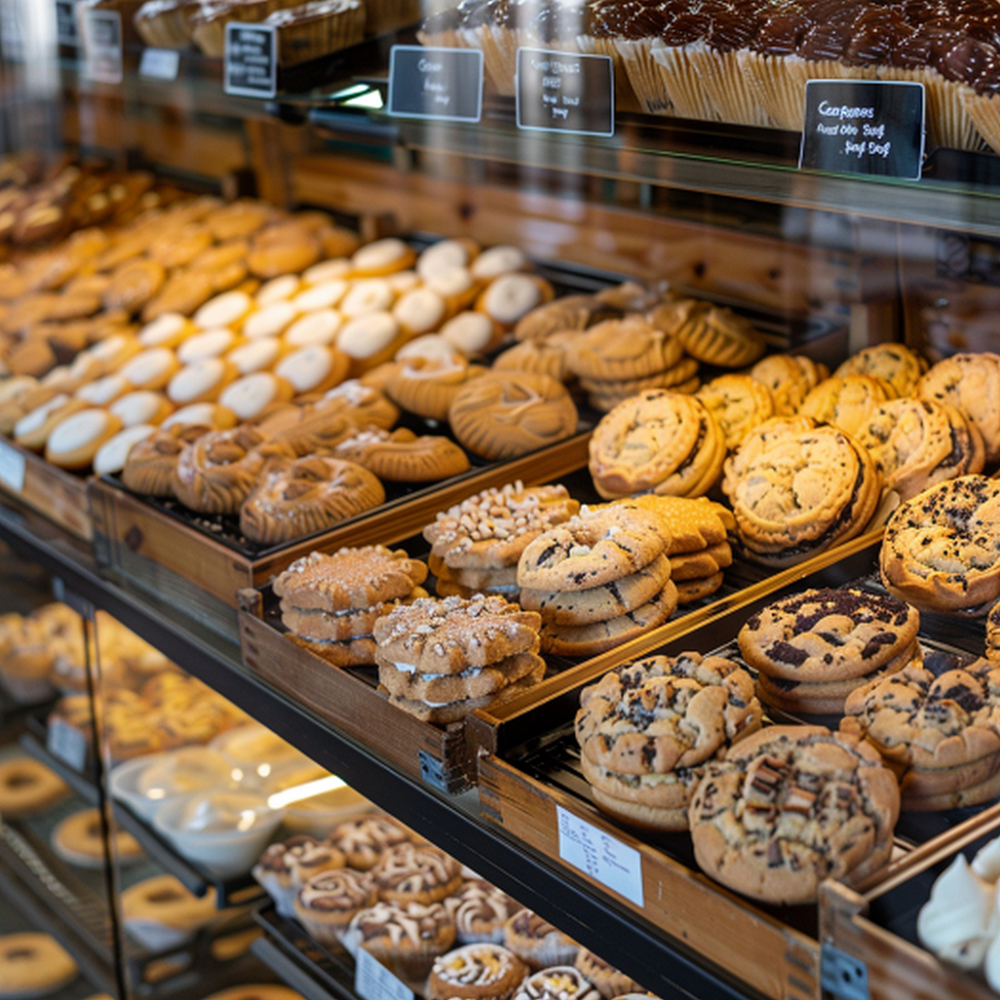

Our Breads, Pastries and Cakes
Everything is baked by hand each day. Prices are approximate ranges, and there is no online checkout. Send us a pre-order request and we will confirm the details with you.

Breads

Crusty, slow-fermented loaves for sandwiches, soups, and sharing at the table.
Signature Loaf
Our hand-shaped round loaf with a deep golden crust. About $8 to $10.
Seeded Sourdough
Topped with sunflower and pumpkin seeds. About $7 to $9.
Country White
Soft inside and lightly dusted with flour. About $5 to $7.
Pastries and Cookies
Small-batch sweets that are perfect for a morning commute or a family treat box.
Chocolate Chunk Cookies
Soft in the middle, crisp at the edges. About $2 to $3 each.
Cream-Filled Shortbread
Buttery layers with a sweet filling. About $3 to $4 each.
Glazed Rolls and Twists
Light, sweet, and baked fresh daily. About $3 to $5 each.
Cakes and Event Orders
Planning a birthday, meeting, or family gathering? Ask about custom cakes and large pastry boxes.
Celebration Cakes
Made to order. About $35 to $75, depending on size.
Pastry Boxes for Groups
Mixed assortments for events. About $20 to $60.